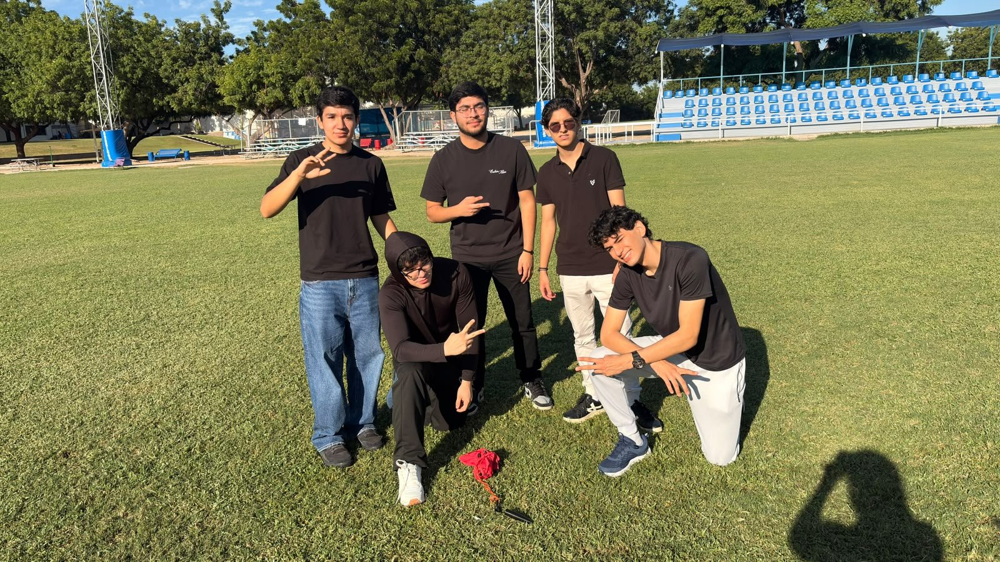

ROCKET TEC / BITÁCORA PUBLICADA
LANZAMIENTO DOCUMENTADOALFA-4 / IMPULSE-X
Grupo 503 · Equipo 01 · Campus Sinaloa
01 / RESUMEN DEL VUELO
Lo que reportó el equipo
DISEÑOPLA
MASA DECLARADA— g
MOTORES RESTANTES3
Encendió y salió de la base. Presentó giros u oscilaciones. Recuperado parcialmente.
02 / DATOS DE LA ENTREGA
Bitácora completa
- Grupo
- 503
- Equipo
- 01
- Fecha del lanzamiento
- 2026-11-13
- Hora del lanzamiento (Sinaloa)
- 07:50
- Versión del diseño
- PLA
- Modelo del motor
- Estes A10-3T
- Motores restantes después del lanzamiento
- 3
- Encendido y salida de la base
- Encendió y salió de la base
- Recuperación
- Recuperado parcialmente
- Trayectoria observada
- Presentó giros u oscilaciones
- Despliegue del paracaídas
- Se desplegó parcialmente
- Lectura válida del sensor
- No se utilizó sensor
- Observaciones
- El cohete salio disparado con gran rapidez de forma recta por los primeros 12m aproximadamente, luego empezó a girar, dio una vuelta completa y finalmente otra media vuelta mientras disminuia su rapidez para empezar a apuntar hacia el suelo, cayendo el cohete y luego saliendo el paracaídas una vez ya en el suelo. El cohete no presentó daños, más el paracaídas se quemó, pegandose y creando hoyos en este.
- Nombre del equipo
- IMPULSE-X
- Autorización de la fotografía
- Confirmada por quien elaboró la bitácora
Identificación del archivo recibido
Folio: ALFA-4-G503-E01-R7552446c-60e8-4ef0-95a3-d379fac1695b
ID: 7552446c-60e8-4ef0-95a3-d379fac1695b
Elaboración declarada por el dispositivo: 2026-11-13T17:00:17.392Z (UTC).
03 / EVIDENCIA FOTOGRÁFICA
Foto después del lanzamiento

Imagen incluida por el equipo y publicada con la autorización declarada en la bitácora.
04 / ARCHIVO ORIGINAL
Consultar la entrega
El ZIP conserva el paquete original enviado por el equipo.